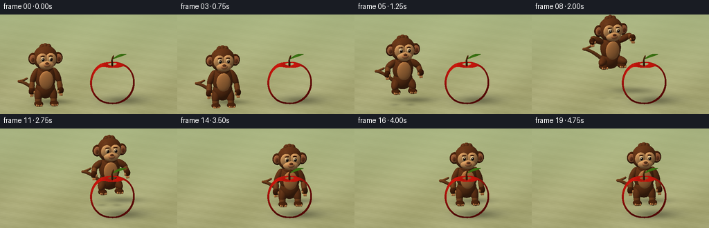
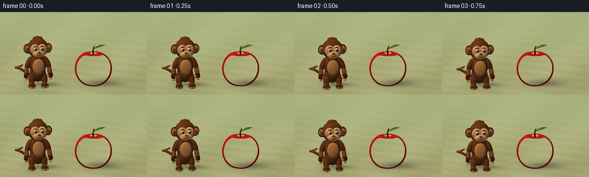

CODING AGENTS AS PIXEL WORLD MODELS
traex/GPT-6.1-Sol · dynamic_spatial_relationship_0055
点击播放 · 原生 RGB 像素
逐轮保存的候选
回放视频、检查图与代码变化。
每份候选均可单独播放。实际图片检查记录在下方工具轨迹中。
候选 01播放与检查图
点击播放 · 原生 RGB 像素


展开代码变化
--- 上一保存版本
+++ 本次保存版本
@@ -0,0 +1,325 @@
+from pathlib import Path
+import math
+import numpy as np
+from PIL import Image, ImageDraw, ImageFilter
+import artifact_io
+
+ROOT=Path(__file__).resolve().parent
+W,H=512,288
+F=np.float32
+# Fixed orthographic camera. Positive z is toward the viewer.
+D=np.array([0,-.31,-1],dtype=F); D/=np.linalg.norm(D)
+U=np.array([0,-D[2],D[1]],dtype=F)
+RIGHT=np.array([1,0,0],dtype=F)
+LOOK=np.array([0,1.08,0],dtype=F)
+xx,yy=np.meshgrid((np.arange(W)+.5)/W-.5,.5-(np.arange(H)+.5)/H)
+O=(LOOK+xx[...,None]*5.25*RIGHT+yy[...,None]*(5.25*H/W)*U-D*9).reshape(-1,3).astype(F)
+NPIX=len(O)
+LIGHT=np.array([-.48,.78,.40],dtype=F); LIGHT/=np.linalg.norm(LIGHT)
+VIEW=-D
+
+# The environment is intentionally subdued so that the two actors read clearly.
+def background():
+ y=np.arange(H)[:,None,None]/H
+ top=np.array([177,200,163]); bottom=np.array([223,221,175])
+ arr=np.broadcast_to(top[None,None,:]*(1-y)+bottom[None,None,:]*y,(H,W,3)).astype('uint8').copy()
+ im=Image.fromarray(arr); dr=ImageDraw.Draw(im,'RGBA')
+ rng=np.random.default_rng(49)
+ for i in range(17):
+ x=int(rng.integers(-20,W+20)); wid=int(rng.integers(9,26))
+ dr.polygon([(x,0),(x+wid,0),(x+wid-4,145),(x-5,160)],fill=(83,113,79,90))
+ for i in range(46):
+ x=int(rng.integers(-60,W+60)); y0=int(rng.integers(-60,110)); r=int(rng.integers(27,85))
+ dr.ellipse((x-r,y0-r,x+r,y0+r),fill=(int(rng.integers(70,132)),int(rng.integers(111,162)),75,45))
+ im=im.filter(ImageFilter.GaussianBlur(13))
+ return np.asarray(im,dtype=F).reshape(-1,3)/255
+BG=background()
+
+class Shape:
+ def __init__(self,c,r,color,kind='fur',rot=None):
+ self.c=np.array(c,dtype=F); self.r=np.array(r,dtype=F)
+ self.rot=np.eye(3,dtype=F) if rot is None else np.array(rot,dtype=F)
+ self.color=np.array(color,dtype=F); self.kind=kind
+ def hit(self):
+ q=(O-self.c)@self.rot/self.r
+ d=(D@self.rot)/self.r
+ a=np.dot(d,d); b=q@d; c=np.sum(q*q,axis=1)-1
+ disc=b*b-a*c
+ hit=disc>=0
+ t=np.full(NPIX,np.inf,dtype=F)
+ t[hit]=(-b[hit]-np.sqrt(disc[hit]))/a
+ t[t<0]=np.inf
+ return t
+ def normal(self,p):
+ q=(p-self.c)@self.rot
+ n=(q/(self.r*self.r))@self.rot.T
+ return n/(np.linalg.norm(n,axis=1,keepdims=True)+1e-8)
+
+def segment(a,b,r,color,kind='fur'):
+ a=np.array(a); b=np.array(b); v=b-a; length=np.linalg.norm(v); v/=length
+ ref=np.array([0,0,1.]) if abs(v[2])<.9 else np.array([0,1.,0])
+ x=np.cross(v,ref); x/=np.linalg.norm(x); z=np.cross(x,v)
+ return Shape((a+b)/2,(r,length/2+r,r),color,kind,np.stack([x,v,z],axis=1))
+
+APPLE_C=np.array([.70,.64,.42],dtype=F)
+def apple_f(p):
+ q=p-APPLE_C
+ rr=q[:,0]**2+q[:,2]**2
+ angle=np.arctan2(q[:,2],q[:,0])
+ lobes=1+.022*np.cos(5*angle)*(np.clip(q[:,1]/.65,0,1)*.7+.3)
+ shift=np.where(q[:,1]>0,.15,-.055)*np.exp(-rr/.065)
+ return (np.sqrt(rr/(.66*lobes)**2+((q[:,1]+shift)/.66)**2)-1)*.57
+
+def apple_hit():
+ q=O-APPLE_C
+ b=q@D; c=np.sum(q*q,axis=1)-.84**2
+ disc=b*b-c; ids=np.flatnonzero(disc>=0)
+ tt=-b[ids]-np.sqrt(disc[ids])
+ max_t=-b[ids]+np.sqrt(disc[ids]); valid=np.ones(len(ids),bool)
+ for _ in range(72):
+ p=O[ids]+tt[:,None]*D
+ dist=apple_f(p)
+ tt+=np.maximum(dist,.00015)*.8
+ valid&=tt<=max_t
+ good=valid & (np.abs(apple_f(O[ids]+tt[:,None]*D))<.002)
+ out=np.full(NPIX,np.inf,dtype=F); out[ids[good]]=tt[good]
+ return out
+APPLE_T=apple_hit()
+
+brown=(.37,.19,.085); lightbrown=(.45,.25,.115); darkbrown=(.26,.12,.045)
+tan=(.77,.51,.29); face=(.84,.62,.40)
+
+def scene(frame):
+ # Anticipation, flight, landing and a quiet final hold.
+ if frame<4:
+ u=0; jump=0; crouch=.065*(frame/3)
+ elif frame<13:
+ u=(frame-4)/8; jump=.69*math.sin(math.pi*u); crouch=0
+ else:
+ u=1; jump=0; crouch=.09*math.exp(-(frame-13)/1.5)
+ ease=u*u*(3-2*u)
+ x=-1.28+1.98*ease; z=.46-1.50*ease
+ yaw=.12+.17*math.sin(math.pi*u)
+ cy,sy=math.cos(yaw),math.sin(yaw)
+ R=np.array([[cy,0,sy],[0,1,0],[-sy,0,cy]])
+ base=np.array([x,jump-crouch,z])
+ objects=[]
+ def sphere(c,r,col,kind='fur'):
+ obj=Shape(base+R@np.array(c),r,col,kind,R);objects.append(obj)
+ def limb(a,b,r,col=brown,kind='fur'):
+ objects.append(segment(base+R@np.array(a),base+R@np.array(b),r,col,kind))
+ fly=math.sin(math.pi*u) if 0<u<1 else 0
+ # Tail curls out on the left, with a smooth tapered silhouette.
+ points=[]
+ for t in np.linspace(0,1,27):
+ ang=-1.0+t*4.6
+ tx=-.26-.41*math.sin(t*math.pi*.7)-.16*math.sin(ang)*t
+ ty=.36+.51*t+.17*math.cos(ang)*t+.12*fly
+ tz=-.17-.10*t
+ points.append([tx,ty,tz])
+ for k in range(len(points)-1):
+ limb(points[k],points[k+1],.056-.025*k/(len(points)-1),lightbrown)
+ # Hips, pear-shaped torso, chest and contrasting belly.
+ sphere((0,.48,0),(.29,.31,.23),brown)
+ sphere((0,.82,.005),(.31,.41,.25),brown)
+ sphere((0,.79,.215),(.21,.285,.071),tan,'skin')
+ sphere((0,1.10,.035),(.205,.18,.19),brown)
+ # Legs fold naturally in flight and extend for landing.
+ for sign in [-1,1]:
+ hip=[sign*.19,.45,.01]
+ knee=[sign*(.23+.10*fly),.23+.20*fly,.12+.10*fly]
+ ankle=[sign*(.23+.05*fly),.105+.23*fly,.16-.05*fly]
+ limb(hip,knee,.126)
+ limb(knee,ankle,.096,lightbrown)
+ sphere((ankle[0],ankle[1]-.025,ankle[2]+.095),(.132,.075,.19),darkbrown)
+ # Four compact toes with delicate warm tips.
+ for j in range(4):
+ tx=ankle[0]+(j-1.5)*.049
+ sphere((tx,ankle[1]-.033,ankle[2]+.244),(.027,.035,.052),tan,'skin')
+ # Long primate arms, lifting during the leap.
+ for sign in [-1,1]:
+ shoulder=[sign*.275,1.02,.015]
+ elbow=[sign*(.40+.14*fly),.72+.44*fly,.05]
+ wrist=[sign*(.43+.19*fly),.46+.66*fly,.19]
+ limb(shoulder,elbow,.10)
+ limb(elbow,wrist,.083,lightbrown)
+ sphere(wrist,(.093,.117,.073),darkbrown)
+ for j in range(3):
+ a=np.array(wrist)+[sign*(j-1)*.032,-.085,.027]
+ b=a+[sign*.005,-.055,.029]
+ limb(a,b,.021,tan,'skin')
+ sphere(np.array(wrist)+[-sign*.07,-.03,.047],(.031,.052,.032),tan,'skin')
+ # Head silhouette and expressive ears.
+ heady=1.43-.045*fly
+ sphere((0,heady,0),(.365,.37,.305),brown)
+ for sign in [-1,1]:
+ sphere((sign*.365,heady-.012,.02),(.147,.181,.084),darkbrown)
+ sphere((sign*.382,heady-.008,.085),(.104,.13,.032),(.72,.43,.27),'skin')
+ sphere((sign*.39,heady-.02,.111),(.047,.071,.018),(.46,.235,.13),'skin')
+ # Crown tufts make a recognizable monkey, rather than a teddy bear.
+ for k in range(3):
+ sphere((-.09+.09*k,heady+.313,-.03),(.09,.10+.025*(k==1),.093),brown)
+ # Joined pale orbital patches, projecting from a dark fur mask.
+ for sign in [-1,1]:
+ sphere((sign*.128,heady+.016,.264),(.172,.199,.083),face,'skin')
+ sphere((0,heady-.135,.301),(.228,.14,.123),face,'skin')
+ # Small muzzle, nose bridge and nostrils.
+ sphere((0,heady-.113,.395),(.107,.071,.057),(.73,.47,.30),'skin')
+ sphere((0,heady-.066,.413),(.062,.047,.035),(.37,.205,.115),'skin')
+ for sign in [-1,1]:
+ sphere((sign*.030,heady-.073,.438),(.012,.008,.005),(.12,.06,.027),'matte')
+ # Warm dark-brown eyes with real specular highlights and small brows.
+ for sign in [-1,1]:
+ sphere((sign*.122,heady+.051,.338),(.061,.074,.034),(.96,.86,.67),'skin')
+ sphere((sign*.122+.009,heady+.049,.367),(.042,.050,.024),(.19,.09,.035),'eye')
+ sphere((sign*.122+.012,heady+.050,.387),(.023,.032,.007),(.022,.012,.006),'eye')
+ sphere((sign*.122-.004,heady+.075,.392),(.012,.014,.007),(.99,.97,.86),'glint')
+ limb((sign*.075,heady+.148,.335),(sign*.177,heady+.136,.315),.020,darkbrown)
+ # Delicate curved closed smile.
+ for a,b in zip(np.linspace(-.125,.125,12)[:-1],np.linspace(-.125,.125,12)[1:]):
+ ya=heady-.213+.035*(a/.125)**2; yb=heady-.213+.035*(b/.125)**2
+ za=.39-.06*(a/.17)**2; zb=.39-.06*(b/.17)**2
+ limb((a,ya,za),(b,yb,zb),.007,(.29,.125,.065),'matte')
+ # Fixed woody apple stem.
+ objects.append(segment((.70,1.14,.42),(.69,1.34,.415),.031,(.27,.13,.047),'wood'))
+ objects.append(segment((.69,1.34,.415),(.735,1.46,.40),.025,(.32,.17,.06),'wood'))
+ # Leaf: a pointed curved polygon represented by a tiny custom triangle mesh later.
+ return objects, base, fly
+
+# Draw the leaf using ray/triangle intersections; smooth surface shading follows its folded shape.
+def leaf_geometry():
+ p0=np.array([.704,1.365,.414]); tip=np.array([1.13,1.51,.38])
+ verts=[]
+ for t in np.linspace(0,1,15):
+ mid=p0*(1-t)+tip*t+np.array([0,.052*math.sin(t*math.pi),0])
+ wid=.125*math.sin(math.pi*t)**.75
+ verts.extend([mid+np.array([0,-.018*math.sin(math.pi*t),-wid]),mid,mid+np.array([0,-.023*math.sin(math.pi*t),wid])])
+ tris=[]
+ for i in range(14):
+ for j in [0,1]:
+ a=3*i+j;b=a+1;c=a+3;d=a+4
+ tris.extend([(verts[a],verts[b],verts[c]),(verts[b],verts[d],verts[c])])
+ ts=np.full(NPIX,np.inf,dtype=F); normals=np.zeros((NPIX,3),dtype=F)
+ for a,b,c in tris:
+ e1=b-a;e2=c-a;h=np.cross(D,e2); det=np.dot(e1,h)
+ if abs(det)<1e-8:continue
+ s=O-a; uu=(s@h)/det; q=np.cross(s,e1); vv=(q@D)/det; t=(q@e2)/det
+ mask=(uu>=0)&(vv>=0)&(uu+vv<=1)&(t>0)&(t<ts)
+ ts[mask]=t[mask]; n=np.cross(e1,e2);n/=np.linalg.norm(n)
+ if np.dot(n,VIEW)<0:n=-n
+ normals[mask]=n
+ return ts,normals
+LEAF_T,LEAF_N=leaf_geometry()
+
+
+def render(frame):
+ shapes,base,fly=scene(frame)
+ floor_t=-O[:,1]/D[1]
+ floorp=O+floor_t[:,None]*D
+ floor_mask=floor_t>0
+ nearest=np.where(floor_mask,floor_t,np.inf).astype(F)
+ which=np.full(NPIX,-1,dtype=np.int16)
+ for i,obj in enumerate(shapes):
+ t=obj.hit(); mask=t<nearest; nearest[mask]=t[mask];which[mask]=i
+ m=APPLE_T<nearest;nearest[m]=APPLE_T[m];which[m]=-2
+ m=LEAF_T<nearest;nearest[m]=LEAF_T[m];which[m]=-3
+ out=BG.copy()
+ # Ground: soft moss, warm soil, fine granular texture, shadows grounding both actors.
+ m=which==-1
+ p=floorp[m]; gx=p[:,0];gz=p[:,2]
+ noise=(np.sin(gx*20+np.sin(gz*18))*np.sin(gz*25)+.6*np.sin(gx*83+gz*103))*.009
+ variation=.023*np.sin(gx*2+gz*.7)+.012*np.sin(gz*7-gx*3)
+ g=np.array([.64,.64,.43])[None,:]+(noise+variation)[:,None]
+ shadow=np.zeros(len(p),dtype=F)
+ # Broad penumbrae plus tight contact occlusion.
+ for c,r,strength in [(APPLE_C,(.50,.37),.40),(base+np.array([0,.37,0]),(.44,.23),.37)]:
+ h=max(c[1],.01); sx=c[0]-h*LIGHT[0]/LIGHT[1]; sz=c[2]-h*LIGHT[2]/LIGHT[1]
+ spread=1+h*.43
+ v=np.exp(-((gx-sx)/(r[0]*spread))**2-((gz-sz)/(r[1]*spread))**2)
+ shadow+=strength*v/(1+h*.28)
+ for c,r in [(APPLE_C,(.49,.39)),(base+np.array([-.23,.08,.18]),(.14,.13)),(base+np.array([.23,.08,.18]),(.14,.13))]:
+ v=np.exp(-((gx-c[0])/r[0])**2-((gz-c[2])/r[1])**2)
+ shadow+=.20*v*np.exp(-max(c[1]-.2,0)*2)
+ g*=np.clip(1-shadow[:,None],.36,1)
+ fog=np.clip((-gz-1)/10,0,.7)
+ g=g*(1-fog[:,None])+np.array([.65,.72,.50])*fog[:,None]
+ out[m]=g
+ ids=np.flatnonzero(which!=-1)
+ P=O[ids]+nearest[ids,None]*D
+ normals=np.zeros_like(P); albedo=np.zeros_like(P); rough=np.ones(len(ids),dtype=F)*.4
+ kindid=which[ids]
+ for i,obj in enumerate(shapes):
+ sel=kindid==i
+ if not np.any(sel):continue
+ pp=P[sel]; n=obj.normal(pp); normals[sel]=n
+ col=np.broadcast_to(obj.color,(len(pp),3)).copy()
+ if obj.kind=='fur':
+ # Fine deterministic strands, never temporally flickering.
+ local=(pp-base)@obj.rot
+ grain=np.sin(local[:,0]*174+local[:,1]*64+np.sin(local[:,2]*113)*2)*np.sin(local[:,1]*240-local[:,2]*87)
+ grain+=.4*np.sin(local[:,0]*420+local[:,2]*180)
+ col*=1+grain[:,None]*.055
+ rough[sel]=.12
+ elif obj.kind=='skin':
+ rough[sel]=.23
+ elif obj.kind=='eye':rough[sel]=1.6
+ elif obj.kind=='glint':rough[sel]=0
+ else:rough[sel]=.17
+ albedo[sel]=col
+ sel=kindid==-2
+ if np.any(sel):
+ pp=P[sel]; eps=.0005
+ n=np.column_stack([(apple_f(pp+np.eye(3)[j]*eps)-apple_f(pp-np.eye(3)[j]*eps))/(2*eps) for j in range(3)])
+ n/=np.linalg.norm(n,axis=1,keepdims=True)
+ normals[sel]=n
+ q=pp-APPLE_C
+ angle=np.arctan2(q[:,2],q[:,0])
+ stripes=.5+.5*np.sin(angle*17+q[:,1]*6+np.sin(angle*7)*.7)
+ mix=np.clip(.12+.22*stripes+.13*q[:,1],0,.6)
+ red=np.array([.68,.025,.032]); gold=np.array([.91,.14,.035])
+ col=red[None,:]*(1-mix[:,None])+gold*mix[:,None]
+ # Tiny pale lenticels on glossy red skin.
+ dot=(np.sin(q[:,0]*231+np.sin(q[:,1]*137))*np.sin(q[:,1]*258+q[:,2]*59)> .982)
+ col[dot]=col[dot]*.7+np.array([.91,.65,.34])*.3
+ albedo[sel]=col;rough[sel]=.80
+ sel=kindid==-3
+ normals[sel]=LEAF_N[ids[sel]]; albedo[sel]=np.array([.18,.41,.055]);rough[sel]=.25
+ ndl=np.maximum(normals@LIGHT,0)
+ sky=np.clip(normals[:,1]*.5+.5,0,1)
+ # Warm sunlight and a soft ambient fill.
+ illumination=(.34+.15*sky+.53*ndl)[:,None]*np.array([1.05,.99,.88])
+ # Approximate local ambient occlusion using soft ellipsoidal neighbourhoods.
+ ao=np.ones(len(P),dtype=F)
+ for obj in shapes:
+ if obj.kind in ('eye','glint'):continue
+ dist=np.linalg.norm(P-obj.c,axis=1)
+ radius=float(min(obj.r)*.88)
+ to=obj.c-P
+ facing=np.maximum(np.sum(normals*to,axis=1)/(dist+1e-6),0)
+ occ=np.minimum(radius**2/(dist**2+1e-5),.65)*facing*.18
+ ao*=1-occ
+ illumination*=np.clip(ao,.70,1)[:,None]
+ half=LIGHT+VIEW;half/=np.linalg.norm(half)
+ ndh=np.maximum(normals@half,0)
+ spec=(ndh**55*.20+ndh**12*.035)*rough
+ # Apple has a broad luminous softbox reflection, not a plastic white dot.
+ spec[kindid==-2]=(ndh[kindid==-2]**38*.30+ndh[kindid==-2]**9*.026)
+ col=albedo*illumination+spec[:,None]*np.array([1,.96,.82])
+ rim=np.maximum(1-normals@VIEW,0)**3*.035
+ col+=rim[:,None]*np.array([.77,.83,.55])
+ gl=np.array([shapes[i].kind=='glint' if i>=0 else False for i in kindid])
+ col[gl]=[.97,.96,.85]
+ out[ids]=col
+ # A subtle edge vignette and a gentle display transform.
+ out=out.reshape(H,W,3)
+ vignette=1-.045*((xx/.7)**2+(yy/.7)**2)
+ out=np.clip(out*vignette[...,None],0,1)
+ out=np.uint8(np.clip(out**(1/1.12)*255,0,255))
+ return np.asarray(Image.fromarray(out).resize((256,144),Image.Resampling.LANCZOS))
+
+if __name__=='__main__':
+ frames=[]
+ for f in range(20):
+ frames.append(render(f)); print(f'Frame {f+1}/20',flush=True)
+ artifact_io.save(np.stack(frames),ROOT)
+ print('Saved RGB video artifacts.',flush=True)
可观测工具轨迹
实际执行的命令与返回图片。
命令 1exit 0
/bin/bash -lc 'ls -la && cat prompt.txt && cat GENERATION_RULES.md && cat task_spec.json'
命令 2exit 0
/bin/bash -lc 'cat artifact_io.py'
命令 3exit 0
/bin/bash -lc "cat > generate.py <<'PY'
from pathlib import Path
import math
import numpy as np
from PIL import Image, ImageDraw, ImageFilter
import artifact_io
ROOT=Path(__file__).resolve().parent
W,H=512,288
F=np.float32
# Fixed orthographic camera. Positive z is toward the viewer.
D=np.array([0,-.31,-1],dtype=F); D/=np.linalg.norm(D)
U=np.array([0,-D[2],D[1]],dtype=F)
RIGHT=np.array([1,0,0],dtype=F)
LOOK=np.array([0,1.08,0],dtype=F)
xx,yy=np.meshgrid((np.arange(W)+.5)/W-.5,.5-(np.arange(H)+.5)/H)
O=(LOOK+xx[...,None]*5.25*RIGHT+yy[...,None]*(5.25*H/W)*U-D*9).reshape(-1,3).astype(F)
NPIX=len(O)
LIGHT=np.array([-.48,.78,.40],dtype=F); LIGHT/=np.linalg.norm(LIGHT)
VIEW=-D
# The environment is intentionally subdued so that the two actors read clearly.
def background():
y=np.arange(H)[:,None,None]/H
top=np.array([177,200,163]); bottom=np.array([223,221,175])
arr=np.broadcast_to(top[None,None,:]*(1-y)+bottom[None,None,:]*y,(H,W,3)).astype('uint8').copy()
im=Image.fromarray(arr); dr=ImageDraw.Draw(im,'RGBA')
rng=np.random.default_rng(49)
for i in range(17):
x=int(rng.integers(-20,W+20)); wid=int(rng.integers(9,26))
dr.polygon([(x,0),(x+wid,0),(x+wid-4,145),(x-5,160)],fill=(83,113,79,90))
for i in range(46):
x=int(rng.integers(-60,W+60)); y0=int(rng.integers(-60,110)); r=int(rng.integers(27,85))
dr.ellipse((x-r,y0-r,x+r,y0+r),fill=(int(rng.integers(70,132)),int(rng.integers(111,162)),75,45))
im=im.filter(ImageFilter.GaussianBlur(13))
return np.asarray(im,dtype=F).reshape(-1,3)/255
BG=background()
class Shape:
def __init__(self,c,r,color,kind='fur',rot=None):
self.c=np.array(c,dtype=F); self.r=np.array(r,dtype=F)
self.rot=np.eye(3,dtype=F) if rot is None else np.array(rot,dtype=F)
self.color=np.array(color,dtype=F); self.kind=kind
def hit(self):
q=(O-self.c)@self.rot/self.r
d=(D@self.rot)/self.r
a=np.dot(d,d); b=q@d; c=np.sum(q*q,axis=1)-1
disc=b*b-a*c
hit=disc>=0
t=np.full(NPIX,np.inf,dtype=F)
t[hit]=(-b[hit]-np.sqrt(disc[hit]))/a
t[t<0]=np.inf
return t
def normal(self,p):
q=(p-self.c)@self.rot
n=(q/(self.r*self.r))@self.rot.T
return n/(np.linalg.norm(n,axis=1,keepdims=True)+1e-8)
def segment(a,b,r,color,kind='fur'):
a=np.array(a); b=np.array(b); v=b-a; length=np.linalg.norm(v); v/=length
ref=np.array([0,0,1.]) if abs(v[2])<.9 else np.array([0,1.,0])
x=np.cross(v,ref); x/=np.linalg.norm(x); z=np.cross(x,v)
return Shape((a+b)/2,(r,length/2+r,r),color,kind,np.stack([x,v,z],axis=1))
APPLE_C=np.array([.70,.64,.42],dtype=F)
def apple_f(p):
q=p-APPLE_C
rr=q[:,0]**2+q[:,2]**2
angle=np.arctan2(q[:,2],q[:,0])
lobes=1+.022*np.cos(5*angle)*(np.clip(q[:,1]/.65,0,1)*.7+.3)
shift=np.where(q[:,1]>0,.15,-.055)*np.exp(-rr/.065)
return (np.sqrt(rr/(.66*lobes)**2+((q[:,1]+shift)/.66)**2)-1)*.57
def apple_hit():
q=O-APPLE_C
b=q@D; c=np.sum(q*q,axis=1)-.84**2
disc=b*b-c; ids=np.flatnonzero(disc>=0)
tt=-b[ids]-np.sqrt(disc[ids])
max_t=-b[ids]+np.sqrt(disc[ids]); valid=np.ones(len(ids),bool)
for _ in range(72):
p=O[ids]+tt[:,None]*D
dist=apple_f(p)
tt+=np.maximum(dist,.00015)*.8
valid&=tt<=max_t
good=valid & (np.abs(apple_f(O[ids]+tt[:,None]*D))<.002)
out=np.full(NPIX,np.inf,dtype=F); out[ids[good]]=tt[good]
return out
APPLE_T=apple_hit()
brown=(.37,.19,.085); lightbrown=(.45,.25,.115); darkbrown=(.26,.12,.045)
tan=(.77,.51,.29); face=(.84,.62,.40)
def scene(frame):
# Anticipation, flight, landing and a quiet final hold.
if frame<4:
u=0; jump=0; crouch=.065*(frame/3)
elif frame<13:
u=(frame-4)/8; jump=.69*math.sin(math.pi*u); crouch=0
else:
u=1; jump=0; crouch=.09*math.exp(-(frame-13)/1.5)
ease=u*u*(3-2*u)
x=-1.28+1.98*ease; z=.46-1.50*ease
yaw=.12+.17*math.sin(math.pi*u)
cy,sy=math.cos(yaw),math.sin(yaw)
R=np.array([[cy,0,sy],[0,1,0],[-sy,0,cy]])
base=np.array([x,jump-crouch,z])
objects=[]
def sphere(c,r,col,kind='fur'):
obj=Shape(base+R@np.array(c),r,col,kind,R);objects.append(obj)
def limb(a,b,r,col=brown,kind='fur'):
objects.append(segment(base+R@np.array(a),base+R@np.array(b),r,col,kind))
fly=math.sin(math.pi*u) if 0<u<1 else 0
# Tail curls out on the left, with a smooth tapered silhouette.
points=[]
for t in np.linspace(0,1,27):
ang=-1.0+t*4.6
tx=-.26-.41*math.sin(t*math.pi*.7)-.16*math.sin(ang)*t
ty=.36+.51*t+.17*math.cos(ang)*t+.12*fly
tz=-.17-.10*t
points.append([tx,ty,tz])
for k in range(len(points)-1):
limb(points[k],points[k+1],.056-.025*k/(len(points)-1),lightbrown)
# Hips, pear-shaped torso, chest and contrasting belly.
sphere((0,.48,0),(.29,.31,.23),brown)
sphere((0,.82,.005),(.31,.41,.25),brown)
sphere((0,.79,.215),(.21,.285,.071),tan,'skin')
sphere((0,1.10,.035),(.205,.18,.19),brown)
# Legs fold naturally in flight and extend for landing.
for sign in [-1,1]:
hip=[sign*.19,.45,.01]
knee=[sign*(.23+.10*fly),.23+.20*fly,.12+.10*fly]
ankle=[sign*(.23+.05*fly),.105+.23*fly,.16-.05*fly]
limb(hip,knee,.126)
limb(knee,ankle,.096,lightbrown)
sphere((ankle[0],ankle[1]-.025,ankle[2]+.095),(.132,.075,.19),darkbrown)
# Four compact toes with delicate warm tips.
for j in range(4):
tx=ankle[0]+(j-1.5)*.049
sphere((tx,ankle[1]-.033,ankle[2]+.244),(.027,.035,.052),tan,'skin')
# Long primate arms, lifting during the leap.
for sign in [-1,1]:
shoulder=[sign*.275,1.02,.015]
elbow=[sign*(.40+.14*fly),.72+.44*fly,.05]
wrist=[sign*(.43+.19*fly),.46+.66*fly,.19]
limb(shoulder,elbow,.10)
limb(elbow,wrist,.083,lightbrown)
sphere(wrist,(.093,.117,.073),darkbrown)
for j in range(3):
a=np.array(wrist)+[sign*(j-1)*.032,-.085,.027]
b=a+[sign*.005,-.055,.029]
limb(a,b,.021,tan,'skin')
sphere(np.array(wrist)+[-sign*.07,-.03,.047],(.031,.052,.032),tan,'skin')
# Head silhouette and expressive ears.
heady=1.43-.045*fly
sphere((0,heady,0),(.365,.37,.305),brown)
for sign in [-1,1]:
sphere((sign*.365,heady-.012,.02),(.147,.181,.084),darkbrown)
sphere((sign*.382,heady-.008,.085),(.104,.13,.032),(.72,.43,.27),'skin')
sphere((sign*.39,heady-.02,.111),(.047,.071,.018),(.46,.235,.13),'skin')
# Crown tufts make a recognizable monkey, rather than a teddy bear.
for k in range(3):
sphere((-.09+.09*k,heady+.313,-.03),(.09,.10+.025*(k==1),.093),brown)
# Joined pale orbital patches, projecting from a dark fur mask.
for sign in [-1,1]:
sphere((sign*.128,heady+.016,.264),(.172,.199,.083),face,'skin')
sphere((0,heady-.135,.301),(.228,.14,.123),face,'skin')
# Small muzzle, nose bridge and nostrils.
sphere((0,heady-.113,.395),(.107,.071,.057),(.73,.47,.30),'skin')
sphere((0,heady-.066,.413),(.062,.047,.035),(.37,.205,.115),'skin')
for sign in [-1,1]:
sphere((sign*.030,heady-.073,.438),(.012,.008,.005),(.12,.06,.027),'matte')
# Warm dark-brown eyes with real specular highlights and small brows.
for sign in [-1,1]:
sphere((sign*.122,heady+.051,.338),(.061,.074,.034),(.96,.86,.67),'skin')
sphere((sign*.122+.009,heady+.049,.367),(.042,.050,.024),(.19,.09,.035),'eye')
sphere((sign*.122+.012,heady+.050,.387),(.023,.032,.007),(.022,.012,.006),'eye')
sphere((sign*.122-.004,heady+.075,.392),(.012,.014,.007),(.99,.97,.86),'glint')
limb((sign*.075,heady+.148,.335),(sign*.177,heady+.136,.315),.020,darkbrown)
# Delicate curved closed smile.
for a,b in zip(np.linspace(-.125,.125,12)[:-1],np.linspace(-.125,.125,12)[1:]):
ya=heady-.213+.035*(a/.125)**2; yb=heady-.213+.035*(b/.125)**2
za=.39-.06*(a/.17)**2; zb=.39-.06*(b/.17)**2
limb((a,ya,za),(b,yb,zb),.007,(.29,.125,.065),'matte')
# Fixed woody apple stem.
objects.append(segment((.70,1.14,.42),(.69,1.34,.415),.031,(.27,.13,.047),'wood'))
objects.append(segment((.69,1.34,.415),(.735,1.46,.40),.025,(.32,.17,.06),'wood'))
# Leaf: a pointed curved polygon represented by a tiny custom triangle mesh later.
return objects, base, fly
# Draw the leaf using ray/triangle intersections; smooth surface shading follows its folded shape.
def leaf_geometry():
p0=np.array([.704,1.365,.414]); tip=np.array([1.13,1.51,.38])
verts=[]
for t in np.linspace(0,1,15):
mid=p0*(1-t)+tip*t+np.array([0,.052*math.sin(t*math.pi),0])
wid=.125*math.sin(math.pi*t)**.75
verts.extend([mid+np.array([0,-.018*math.sin(math.pi*t),-wid]),mid,mid+np.array([0,-.023*math.sin(math.pi*t),wid])])
tris=[]
for i in range(14):
for j in [0,1]:
a=3*i+j;b=a+1;c=a+3;d=a+4
tris.extend([(verts[a],verts[b],verts[c]),(verts[b],verts[d],verts[c])])
ts=np.full(NPIX,np.inf,dtype=F); normals=np.zeros((NPIX,3),dtype=F)
for a,b,c in tris:
e1=b-a;e2=c-a;h=np.cross(D,e2); det=np.dot(e1,h)
if abs(det)<1e-8:continue
s=O-a; uu=(s@h)/det; q=np.cross(s,e1); vv=(q@D)/det; t=(q@e2)/det
mask=(uu>=0)&(vv>=0)&(uu+vv<=1)&(t>0)&(t<ts)
ts[mask]=t[mask]; n=np.cross(e1,e2);n/=np.linalg.norm(n)
if np.dot(n,VIEW)<0:n=-n
normals[mask]=n
return ts,normals
LEAF_T,LEAF_N=leaf_geometry()
def render(frame):
shapes,base,fly=scene(frame)
floor_t=-O[:,1]/D[1]
floorp=O+floor_t[:,None]*D
floor_mask=floor_t>0
nearest=np.where(floor_mask,floor_t,np.inf).astype(F)
which=np.full(NPIX,-1,dtype=np.int16)
for i,obj in enumerate(shapes):
t=obj.hit(); mask=t<nearest; nearest[mask]=t[mask];which[mask]=i
m=APPLE_T<nearest;nearest[m]=APPLE_T[m];which[m]=-2
m=LEAF_T<nearest;nearest[m]=LEAF_T[m];which[m]=-3
out=BG.copy()
# Ground: soft moss, warm soil, fine granular texture, shadows grounding both actors.
m=which==-1
p=floorp[m]; gx=p[:,0];gz=p[:,2]
noise=(np.sin(gx*20+np.sin(gz*18))*np.sin(gz*25)+.6*np.sin(gx*83+gz*103))*.009
variation=.023*np.sin(gx*2+gz*.7)+.012*np.sin(gz*7-gx*3)
g=np.array([.64,.64,.43])[None,:]+(noise+variation)[:,None]
shadow=np.zeros(len(p),dtype=F)
# Broad penumbrae plus tight contact occlusion.
for c,r,strength in [(APPLE_C,(.50,.37),.40),(base+np.array([0,.37,0]),(.44,.23),.37)]:
h=max(c[1],.01); sx=c[0]-h*LIGHT[0]/LIGHT[1]; sz=c[2]-h*LIGHT[2]/LIGHT[1]
spread=1+h*.43
v=np.exp(-((gx-sx)/(r[0]*spread))**2-((gz-sz)/(r[1]*spread))**2)
shadow+=strength*v/(1+h*.28)
for c,r in [(APPLE_C,(.49,.39)),(base+np.array([-.23,.08,.18]),(.14,.13)),(base+np.array([.23,.08,.18]),(.14,.13))]:
v=np.exp(-((gx-c[0])/r[0])**2-((gz-c[2])/r[1])**2)
shadow+=.20*v*np.exp(-max(c[1]-.2,0)*2)
g*=np.clip(1-shadow[:,None],.36,1)
fog=np.clip((-gz-1)/10,0,.7)
g=g*(1-fog[:,None])+np.array([.65,.72,.50])*fog[:,None]
out[m]=g
ids=np.flatnonzero(which"'!=-1)
P=O[ids]+nearest[ids,None]*D
normals=np.zeros_like(P); albedo=np.zeros_like(P); rough=np.ones(len(ids),dtype=F)*.4
kindid=which[ids]
for i,obj in enumerate(shapes):
sel=kindid==i
if not np.any(sel):continue
pp=P[sel]; n=obj.normal(pp); normals[sel]=n
col=np.broadcast_to(obj.color,(len(pp),3)).copy()
if obj.kind=='"'fur':
# Fine deterministic strands, never temporally flickering.
local=(pp-base)@obj.rot
grain=np.sin(local[:,0]*174+local[:,1]*64+np.sin(local[:,2]*113)*2)*np.sin(local[:,1]*240-local[:,2]*87)
grain+=.4*np.sin(local[:,0]*420+local[:,2]*180)
col*=1+grain[:,None]*.055
rough[sel]=.12
elif obj.kind=='skin':
rough[sel]=.23
elif obj.kind=='eye':rough[sel]=1.6
elif obj.kind=='glint':rough[sel]=0
else:rough[sel]=.17
albedo[sel]=col
sel=kindid==-2
if np.any(sel):
pp=P[sel]; eps=.0005
n=np.column_stack([(apple_f(pp+np.eye(3)[j]*eps)-apple_f(pp-np.eye(3)[j]*eps))/(2*eps) for j in range(3)])
n/=np.linalg.norm(n,axis=1,keepdims=True)
normals[sel]=n
q=pp-APPLE_C
angle=np.arctan2(q[:,2],q[:,0])
stripes=.5+.5*np.sin(angle*17+q[:,1]*6+np.sin(angle*7)*.7)
mix=np.clip(.12+.22*stripes+.13*q[:,1],0,.6)
red=np.array([.68,.025,.032]); gold=np.array([.91,.14,.035])
col=red[None,:]*(1-mix[:,None])+gold*mix[:,None]
# Tiny pale lenticels on glossy red skin.
dot=(np.sin(q[:,0]*231+np.sin(q[:,1]*137))*np.sin(q[:,1]*258+q[:,2]*59)> .982)
col[dot]=col[dot]*.7+np.array([.91,.65,.34])*.3
albedo[sel]=col;rough[sel]=.80
sel=kindid==-3
normals[sel]=LEAF_N[ids[sel]]; albedo[sel]=np.array([.18,.41,.055]);rough[sel]=.25
ndl=np.maximum(normals@LIGHT,0)
sky=np.clip(normals[:,1]*.5+.5,0,1)
# Warm sunlight and a soft ambient fill.
illumination=(.34+.15*sky+.53*ndl)[:,None]*np.array([1.05,.99,.88])
# Approximate local ambient occlusion using soft ellipsoidal neighbourhoods.
ao=np.ones(len(P),dtype=F)
for obj in shapes:
if obj.kind in ('eye','glint'):continue
dist=np.linalg.norm(P-obj.c,axis=1)
radius=float(min(obj.r)*.88)
to=obj.c-P
facing=np.maximum(np.sum(normals*to,axis=1)/(dist+1e-6),0)
occ=np.minimum(radius**2/(dist**2+1e-5),.65)*facing*.18
ao*=1-occ
illumination*=np.clip(ao,.70,1)[:,None]
half=LIGHT+VIEW;half/=np.linalg.norm(half)
ndh=np.maximum(normals@half,0)
spec=(ndh**55*.20+ndh**12*.035)*rough
# Apple has a broad luminous softbox reflection, not a plastic white dot.
spec[kindid==-2]=(ndh[kindid==-2]**38*.30+ndh[kindid==-2]**9*.026)
col=albedo*illumination+spec[:,None]*np.array([1,.96,.82])
rim=np.maximum(1-normals@VIEW,0)**3*.035
col+=rim[:,None]*np.array([.77,.83,.55])
gl=np.array([shapes[i].kind=='glint' if i>=0 else False for i in kindid])
col[gl]=[.97,.96,.85]
out[ids]=col
# A subtle edge vignette and a gentle display transform.
out=out.reshape(H,W,3)
vignette=1-.045*((xx/.7)**2+(yy/.7)**2)
out=np.clip(out*vignette[...,None],0,1)
out=np.uint8(np.clip(out**(1/1.12)*255,0,255))
return np.asarray(Image.fromarray(out).resize((256,144),Image.Resampling.LANCZOS))
if __name__=='__main__':
frames=[]
for f in range(20):
frames.append(render(f)); print(f'Frame {f+1}/20',flush=True)
artifact_io.save(np.stack(frames),ROOT)
print('Saved RGB video artifacts.',flush=True)
PY
OPENBLAS_NUM_THREADS=1 python generate.py"命令 4exit 0
/bin/bash -lc "python - <<'PY'
import numpy as np
from pathlib import Path
from PIL import Image
p=Path('.')
a=np.load('pixels.npz')['pixels']
assert a.shape==(144,256,20)
assert len(list((p/'frames').glob('*.png')))==20
assert all(Image.open(p/'frames'/f'{i:02d}.png').mode=='RGB' for i in range(20))
for f in ['generate.py','pixels.npz','index.html','inspection.png','transition_check.png']:
print(f, (p/f).stat().st_size)
print('Validated 20 RGB frames, 256 Ã 144, 4 fps.')
PY"保存候选 1 份；完成命令 4 次；可验证图片返回 0 张。原始 API 响应与完整日志保留在本地。